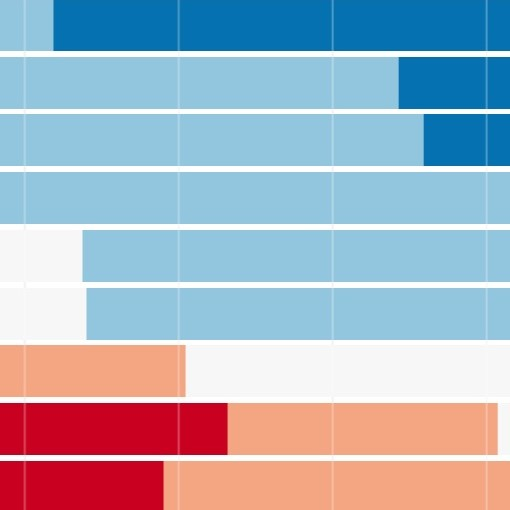
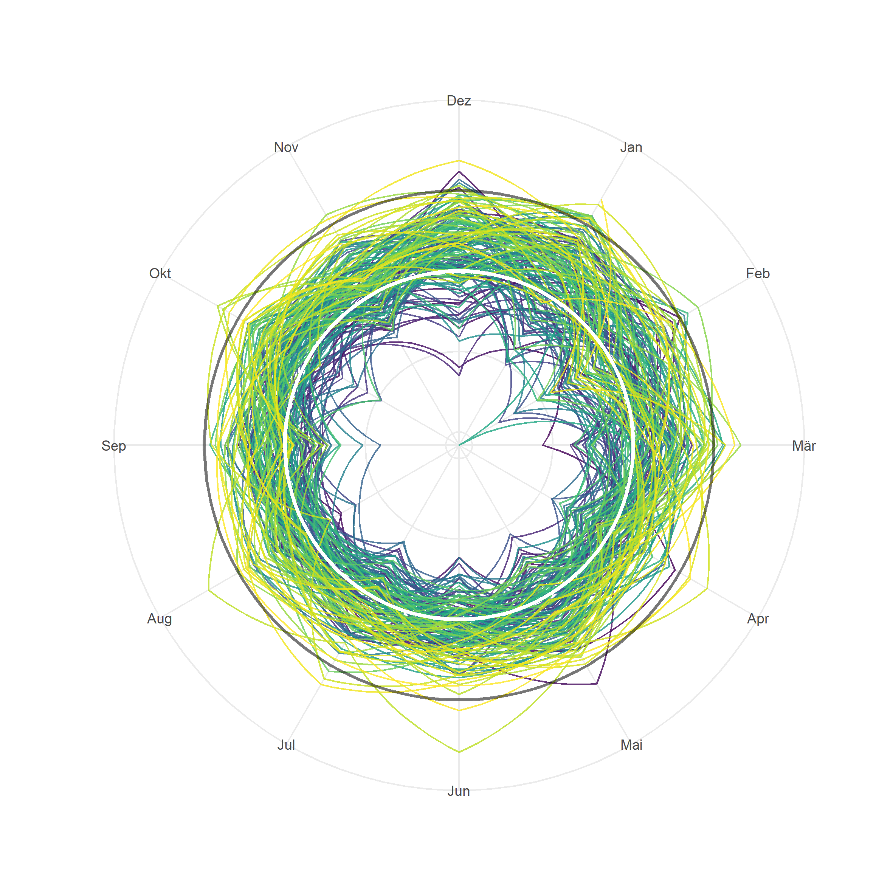
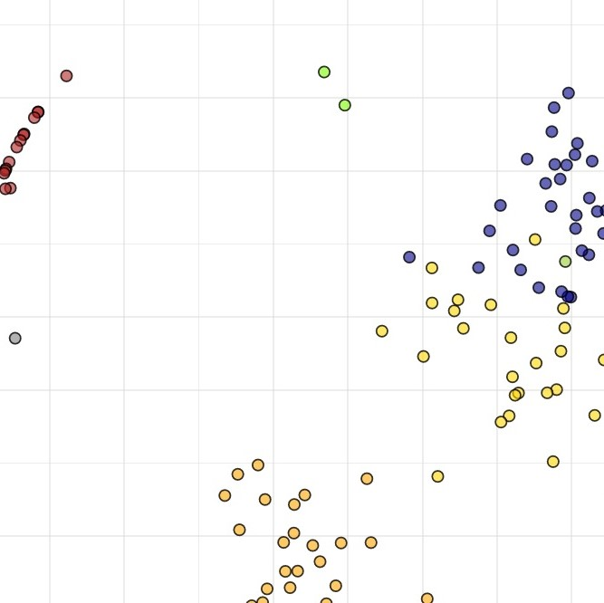
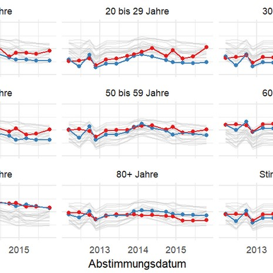

Political Scientist.
I work a the Federal Office of Culture in the area of language policy and cultural statistics. My interest in this subject has its roots in my mother tongue, Rumantsch.
I'm a Political Scientist, by training. I worked on Voting, Opinion Formation, Participation, Digitalisation and Energy Policy. I still like to fiddle around with data and data vis from time to time.
As balance for my digital live, I spend my free time in the mountains, whether skiing, mountaineering, climbing or hunting. The Alps are my home.
since 2021: Scientific collaborator at the Federal Office of Culture, Language and Statistics.
2020-2021: Scientific collaborator at the Federal Office of Statistics, Voting and Election Statistics.
2019-2020: PostDoc in the Digital Democracy Lab, University of Zurich.
since 2016: Political Expert for Somedia/Südostschweiz radio and newspaper.
2015-2018: PhD (Dr. rer. soc.) in Political Science, University of Bern, Prof. Isabelle Stadelmann-Steffen.
2017: Visiting Scholar at Northwestern University with Prof. Dr. James N. Druckman.
2008-2014: BA in Social Sciences and MA in Political Science, University of Bern.

Energy Policy
University of Bern
From 2015 to 2018, I worked as a PhD student in a project on energy policy and the acceptance of renewable energies.

Berner Umweltforschungspreis
University of Bern
My dissertation on Citizens' Support for Energy Policy was awarded the "Berner Umweltforschungspreis" in 2019, endowed with 15'000 CHF.
Digital Democracy Lab
University of Zurich
As postdoc, I managed the launch of the Digital Democracy Lab at the University of Zurich. In the first year, we focused on the infrastructure and a pilot study for the 2019 national elections in Switzerland.

grwatch.ch
Independent project
How the cantonal parliament of Grison votes is documented on grwatch.ch - with visualizations, résumés, analyses.

R and Datavis
Independent and collab with gfzb.ch
I'm using R and other tools for my work. I've taught courses on R and data visualisation in academia and also private settings.
Dissertation Dermont, C. 2018. Citizens’ support for the energy transition. The influence of policy and politics on citizens’ opinions towards renewable energy promotion. PhD thesis. University of Bern. Open Access. Berner Umweltforschungspreis.
Dermont, C. 2021. 50 Jahre Frauenstimmrecht und 30 Jahre Stimmrechtsalter 18. Neuchâtel: Bundesamt für Statistik. Download.
Gilardi, F., Baumgartner, L., Dermont, C., Donnay, K., Gessler, T., Kubli, M., Leemann, L. and Müller, S. 2021. Building Research Infrastructures to Study Digital Technology and Politics: Lessons from Switzerland. PS: Political Sciencce & Politics. 55(2): 354-359. doi: 10.1017/S1049096521000895.
Stadelmann-Steffen, I. and Dermont, C. 2021. Acceptance through inclusion? Political and economic participation and the acceptance of local renewable energy projects in Switzerland. Energy Research & Social Science 71: 101818. doi: 10.1016/j.erss.2020.101818. Manuscript.
Dermont, C. and Weisstanner, D. 2020. Automation and the future of the welfare state: Basic income as a response to technological change? Political Research Exchange 2(1): 1757387. doi: 10.1080/2474736X.2020.1757387.
Gilardi, F., Dermont, C. and Kubli, M. 2020. Die digitale Transformation der Demokratie. In: Braun Binder, N., et al. (eds.), Jahrbuch für direkte Demokratie 2020. Nomos. doi: 10.5771/9783748921226-13.
Gilardi, F., Dermont, C. and Kubli, M. 2020. Social Media: Noch kaum Einfluss auf Schweizer Politik. Die Volkswirtschaft 11/2020: 20-22. Link.
Gilardi, F., Dermont, C., Kubli, M. and Baumgartner, L. 2020. Selects Medienstudie 2020: Der Wahlkampf 2019 in traditionellen und digitalen Medien. Digital Democracy Lab, University of Zurich. PDF.
Dermont, C. and Kammermann, L. 2020. Political Candidates and the Energy Issue: Nuclear Power Position and Electoral Success. Review of Policy Research 37(3): 369-385. doi: 10.1111/ropr.12374.
Dermont, C. 2019. Environmental decision-making: the influence of policy information. Environmental Politics 28(3): 544-567. doi: 10.1080/09644016.2018.1480258. Manuscript. Environmental Politics Best Paper 2019 Award.
Dermont, C. and Stadelmann-Steffen, I. 2019. The role of policy and party information in direct-democratic campaigns. International Journal of Public Opinion Research accepted for publication. doi: 10.1093/ijpor/edz030.
Stadelmann-Steffen, I. and Dermont, C. 2019. Citizens’ Opinions About Basic Income Proposals Compared – A Conjoint Analysis of Finland and Switzerland. Journal of Social Policy 49(2): 383-403. doi:10.1017/S0047279419000412. Manuscript.
Dermont, C. 2019. Aus bipolar wird tripolar: Polarisierung bei Parlamentsabstimmungen. In: Bühlmann, M., Heidelberger, A. and Schaub, H.-P. (eds.), Konkordanz im Parlament. Entscheidungsfindung zwischen Kooperation und Konkurrenz. Zurich: NZZ Libro. Order.
Dermont, C. and Stadelmann-Steffen, I. 2018. Who decides? Characteristics of a Vote and its Influence on the Electorate. Representation 54(4): 391-413. doi:10.1080/00344893.2018.1550109. Manuscript. Honorable Mention for Best Paper Award, Volume 2018, Journal of Representation.
Stadelmann-Steffen, I., Ingold, K., Rieder, S., Dermont, C., Kammermann, L. and Strotz, C. 2018. Akzeptanz erneuerbarer Energie. Bern, Luzern, Dübendorf: Universität Bern, Interface Politikstudien Forschung Beratung, EAWAG. Order.
Kammermann, L. and Dermont, C. 2018. How beliefs of the political elite and citizens on climate change influence support for Swiss energy transition policy. Energy Research & Social Science 48: 43-60. doi: 10.1016/j.erss.2018.05.010. Manuscript.
Stadelmann-Steffen, I. and Dermont, C. 2018. The unpopularity of incentive-based instruments: what improves the cost–benefit ratio? Public Choice 175(1-2): 37-62. doi:10.1007/s11127-018-0513-9. Manuscript.
Dermont, C., Ingold, K., Kammermann, L. and Stadelmann-Steffen, I. 2017. Bringing the policy making perspective in: A political science approach to social acceptance. Energy Policy 108: 359–368. doi: 10.1016/j.enpol.2017.05.062. Manuscript.
Dermont, C. 2016. Taking Turns at the Ballot Box: Selective Participation as a New Perspective on Low Turnout. Swiss Political Science Review 22(2): 213-231. doi: 10.1111/spsr.12194. Manuscript.
Stadelmann-Steffen, I. and Dermont, C. 2015. How exclusive is assembly democracy? Citizens’ assembly and ballot participation compared. Swiss Political Science Review 22(1): 95-122. doi: 10.1111/spsr.12184. Manuscript.
Dermont, C. und Stadelmann-Steffen, I. 2014. Die politische Partizipation der jungen Erwachsenen. Universität Bern. Studie im Auftrag des DSJ/easyvote.
Dermont, C. 2014. Politische Partizipation “à la carte”. Die selektive Partizipation in der Schweiz. Masterarbeit: Universität Bern. makingsciencenews.com.
Das Ja zum Energiegesetz, 18.7.2017
Motive eines Abstimmungsentscheids, 30.8.2016
Beteiligung an Gemeindeversammlungen, 21.12.2015
"Die Schweiz ist auch Italienisch und Rätoromanisch", Bundesamtes für Kultur (BAK) / Eidgenössisches Departement für auswärtige Angelegenheiten (EDA), Zurich, 29.11.2019.
"Digitale Verwaltung zum Nutzen aller", Netzwerkveranstaltung eGovernment Schweiz, Bern, 21.11.2019.
Workshop "Information", Digitalfestival, Zurich, 26.09.2019.
"Digital Democracy", World Conference of Science Journalists, Lausanne, 3.07.2019.
"Unerhört ungehört? | Indifférente ou ignorée?", Jugendsession, Bern, 20.06.2019.
"Digital Democracy: How Digital Technology Affects Democracy", Summer School: Ethics, the Internet and the Society, Basel, 20.06.2019.
"Digitaler Wahlkampf und Datenschutz", Polit-Forum Bern, 13.06.2019.
Input presentation for the discussion round "Hate in our Newsfeed", Digitaltag, Bern, 25.10.2018.
La Marella, "Tgi va insumma anc a vuschar?", RTR, 14.9.2023.
Jetzt zählt jede Stimme, Gastbeitrag, ZEIT Nr. 18/2022, 29.4.2022.
"491 candidaturas, ed uss? In'analisa", RTR, 3.3.2022.
Die Bündner Regierung stellt beim Wahlsystem Macht über Weitsicht, Napoleon's Nightmare, 1.10.2020
Wahlsystem: Kritik aus den Regionen, SRF Regionaljournal Graubünden, 23.09.2020.
Profil, RTR, 19.10.2019.
"Die Politik wird weiblicher", Südostschweiz, 30.9.2019.
Rätoromanische Wahlserie zu den Nationalratswahlen 2019 und den sieben antretenden Parteien: FDP/PLD, BDP/PBD, SP/PS, GLP/PVL, SVP/PPS, Grüne/Verda, CVP/PCD, RTR, 6.9.2019.
Neues Bündner Wahlsystem - «Es ist schwer abzuschätzen, wer profitieren wird», SRF Regionaljournal Graubünden, 22.8.2019.
Der Linksrutsch ist bereits Tatsache, Luzerner Zeitung, 2.4.2019.
Martullo-Blocher zittert um Wiederwahl, Tagesanzeiger, 10.1.2019.
BDP hofft auf zweiten Wahlgang, Schweiz Aktuell, 11.6.2018.
Wählen ohne Wahl, Republik, 7.6.2018.
Le scandale du cartel de la construction ébranle le PBD, 24 heures, 5.6.2018.
"Stille Wahlen" in vielen Wahlkreisen, SRF Regionaljournal Graubünden, 4.6.2018.
Rätoromanische Wahlserie zu den Grossratswahlen 2018 und den sechs antretenden Parteien: GLP/PVL, SVP/PPS, SP/PS, BDP/PBD, CVP/PCD, FDP/PLD, RTR, 18.-30.5.2018.
So stimmten Eure Vertreter im Grossen Rat, Südostschweiz, 24.5.2018.
Die BDP im Baukartell-Skandal, Echo der Zeit, 29.4.2018.
In onn suenter las elecziuns - il proporz sut la marella, RTR, 18.10.2016.
Der Grosse Rat ist transparent geworden, Bündner Tagblatt, 21.5.2015.
Mehr Transparenz - ob es den Grossräten gefällt oder nicht, SRF Regionaljournal Graubünden, 9.5.2016.
Proporz stellt Grossen Rat auf den Kopf, Bündner Tagblatt, 28.11.2015.
BDP- und FDP-Wählerschaft wildert bei der Konkurrenz, Bündner Tagblatt, 20.10.2015.
Der "gläserne" Grossrat, Bündner Tagblatt, 3.10.2015.
clau.dermont@pm.me